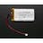

Things used in this project
Hardware components |
|
| Temperature Sensor | |
| Peltier Device | |
|  | Li-Ion Battery 1000mAh |

|
Nordic Semiconductor nRF52 Development Kit |

|
Seeed Studio XIAO ESP32S3 Sense |

|
ControlEverything.com Relay Shield for Particle Photon I²C 8-Channel SPDT 10-Amp |
Story
About the project
A temperature-controlled jacket could be a game-changer for physically challenged individuals, offering significant benefits in terms of comfort, mobility, and health. Many people with physical disabilities, such as spinal cord injuries, multiple sclerosis, or other conditions, often struggle to regulate their body temperature effectively. A temperature-controlled jacket would provide a way to maintain a comfortable body temperature without relying on external environmental conditions. Whether the person is exposed to extreme cold or heat, the jacket could be set to a desired temperature, ensuring that the wearer stays warm in cold weather or cool in hot environments.
For physically challenged individuals with limited mobility, adjusting layers of clothing can be a challenging task. A temperature-controlled jacket eliminates the need for constant changing of clothes to adapt to temperature changes. With easy-to-use controls, the jacket would allow users to adjust their temperature settings with minimal effort, enhancing their independence and reducing reliance on caregivers for something as basic as staying comfortable.
Hardware usage
Peltier Device
A Peltier device, also known as a thermoelectric cooler, is a solid-state electronic component that transfers heat from one side to another when an electric current flows through it. It operates on the Peltier effect, where one side of the device absorbs heat and cools down, while the other side releases heat and warms up. These devices are compact, reliable, and have no moving parts, making them ideal for precise temperature control applications such as cooling electronics, portable refrigerators, or even temperature-controlled clothing. However, they are generally less efficient than traditional cooling methods.
Nordic Semiconductor NRF52840 DK
The Nordic nRF52 Development Kit is dedicated to managing Bluetooth Low Energy (BLE) communication and controlling the haptic feedback motor. It connects wirelessly to a smartphone, allowing for additional processing power and access to external applications if needed. This module also facilitates the transfer of alerts, feedback, or other data between the wearable system and the smartphone. Additionally, it manages the haptic motor's operation, providing tactile feedback in real-time. Positioned near the main processing unit in the wearable device, it ensures efficient communication and control, enhancing the responsiveness of the feedback mechanisms.
- Controls the Peltier device via a PWM output pin.
- Reads the temperature from the sensor via an I2C or analog pin.
- Communicates with a Bluetooth module to receive the baseline temperature.
- Built-in Bluetooth capability in the nRF52840 or an external module can be used to set the baseline temperature.
Generic Smart phone
Almost available with any person in the modern time.
- Communicates with the NRF52840
- Used to set the baseline Temperature inside the Jacket using bluetooth
TMP32 Temperature sensor
Generic I2C temperature sensor to sensing the temperature within the Jacket, placed close to the Peltier device
- Connects to the analog input (if using analog sensors like TMP36) or I2C/SPI pins (if using digital sensors like BME280).
- Power the sensor via 3.3V and GND pins from the nRF52840.
Mosfet control
- The gate of the MOSFET is controlled by a PWM pin from the nRF52840.
- Source connected to ground; drain connected to the negative terminal of the Peltier device.
- The Peltier's positive terminal is connected to the positive terminal of the external power supply.
Wiring
-
nRF52840 Board
:
Power: 3.3V
PWM pin (P0.13) → MOSFET gate .
I2C/Analog pin (P0.04) → Temperature sensor output -
Temperature Sensor (TMP36)
:
VCC → 3.3V
GND → Ground
Vout → P0.04 (ADC pin) -
MOSFET
:
Gate → P0.13 (PWM)
Source → Ground
Drain → Peltier Negative Terminal -
Peltier Device
:
Positive terminal → Power Supply Positive
Negative terminal → MOSFET Drain -
Power Supply
:
Positive terminal → Peltier Positive
Negative terminal → Ground
Overall Functionality
Future Enhancements
- Adaptive Control: Implement PID or machine learning algorithms for efficient temperature control and reduced energy consumption.
- Battery Optimization: Introduce smart power management and solar charging for longer battery life and eco-friendly use.
- Advanced Bluetooth Features: Develop a mobile app for remote control, BLE mesh for smart home integration, and voice assistant support (e.g., Alexa, Google Assistant).
- IoT & Cloud Integration: Enable cloud connectivity for remote monitoring and control, and integrate with smart devices for automated temperature adjustments.
- Multiple Sensors: Add more temperature and humidity sensors for precise regulation, and include biometric sensors for health monitoring.
- Wearable & Flexible Design: Make the device lighter and integrate it into wearable clothing with selective heating/cooling zones.
- AI-driven Personalization: Use AI to learn user preferences and automatically adjust temperatures based on behavior and external conditions.
- Safety Features: Add overheating protection, waterproofing, and fireproofing for reliability and safety.
- Fashion Integration: Collaborate with designers to create stylish, temperature-regulating clothing.